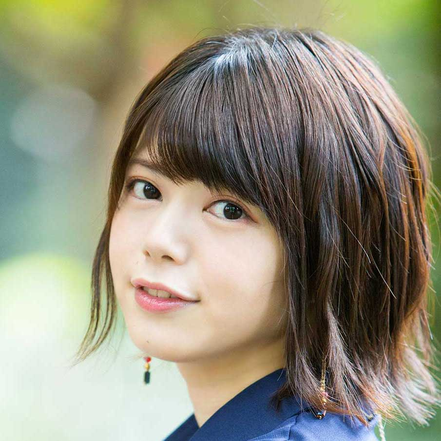

【声マガ・インタビュー】内村 史子
TOPICS
PROFILE
ヴィムスに所属する内村史子鹿児島県出身の12月16日生まれ。『レゴ®ネックスナイツ』（メイシー・ハルバート役）、『青春ブタ野郎はバニーガール先輩の夢を見ない』（香芝玲奈役）、『銃皇無尽のファフニール』（レン・ミヤザワ役）等に出演。2019年10月放送の『私、能力は平均値でって言ったよね！』では、メーヴィス役で出演。
自らを「ずぼらなインドア派」と称する内村さんは、昔からゲームが大好きで、とくにお気に入りはパズル系。「何も考えずに無心でできるものが好き」と言います。女性らしい愛くるしい外見とは裏腹に、「趣味趣向はどちらかというとおじさん寄り」と笑う一面も。そんな内村さんに、声優をめざしたきっかけや日本ナレーション演技研究所（以下、日ナレ）で学んだこと、今後の目標について語っていただきました。
小学5年生から声優になりたいと言い続けていました
声優という仕事を意識したのはいつ頃ですか？
小学5年のとき、国語の授業で朗読劇をやることになったんです。そのとき、泣きべそをかくシーンを本気で演じたら、クラスメイトの女の子に「声優になったらいいじゃん」って言われまして。でも私、声優がなんだかわからなくて、家に帰って姉たちに聞いたんです。そうしたら「アニメとかの声をやっている人だよ」って教えられてビックリ！ 小5にもなって、アニメはアニメのキャラが喋ってるって本気で信じていたんです (笑)。それをきっかけに、声優というお仕事があることを知って、そこからは元々アニメが好きだったこともあって、「声優になりたい！」ってずっと言い続けていました。高校受験のときは、「私立の芸能コースのある学校に行きたい」とも言ったのですが、親から「公立校にして」と言われまして。両親は、いずれ諦めるだろうと思っていたみたいです。でも、高校卒業を控えて進路を考える段階になっても、まだ私は諦めてなくて、「声優になりたいから養成所に行きたい」、しかも「東京に行きたい」と言ったものだから、両親は大反対。散々言い争った末、結局両親が折れて、東京に出てこられることになりました。
日ナレを選んだ理由を教えてください。
高校時代、バイトができていなかったので、東京で養成所に通うにしても金銭的には親に頼らなければならなくて、できるだけ受講料が安い養成所を探し、日ナレを知りました。調べてみたら、基礎から学べるし、お芝居の経験がない私にも合うのではないかと思い、高校3年の時、無料体験レッスンに行きました。
体験レッスンはいかがでしたか？
自分の欲しいものが頭の上にあるけれど、どうしても届かないというお芝居をした時、参加者全員が一斉にジャンプし始めたんです。私はこんなに動いていいものなんだって驚きながらも、恥ずかしさが勝ってしまって、思うように自分を解放することができなくて。こういうことができなければ声優にはなれないんだ、だったら、日ナレで基礎からそれをしっかり学んで、自分を鍛え上げたいと強く思いました。
入所した頃の生活パターンについて教えてください。
演技とボーカルとダンスが学べる週3回クラスに入り、レッスンの前後の時間は自主練を、残り4日はバイトをしていました。
入所した頃の日ナレの印象について教えてください。
演技のクラスでは、まず、自己紹介をきちんとできるようになることから始まって、本当に基礎の基礎から叩き上げられた状態でした。例えば、「おはようございます」「よろしくお願いします」って私は普通に言っているつもりだったのに、鹿児島の方言の影響のせいか癖があったみたいで、「おぁよぅござぃます」みたいな喋り方になっていて。今、振り返っても、まず基礎をしっかり作っていただけたのは、本当にありがたかったです。それはボーカルとダンスも同じでした。
ボーカルとダンスのレッスンはどうでしたか？
ダンスでは、お芝居に必要な体力づくりやリズム感を養うことが重視されていて、とても楽しかったです。ボーカルのレッスンでは、音が正しく取れるようになるのはもちろんのこと、講師が気持ちを込めて歌うことをすごく重視する方で、とても勉強になりました。
本科に上がってからも、ボーカルとダンスのレッスンは続けていたのですか？
実は私、本科で壁にぶつかってしまったんです。基礎科のときに勤めていたバイト先がつぶれてしまい、本科の年から新しいバイト先に移ったものの、週6日働かないと生活がまわらなくなってしまいました。だんだん朝、起きられなくなって、メンタル的にもしんどくなって、レッスンを休みがちになってしまって……。
どうやって克服したんですか？
生活のためにアルバイトを優先している中で、じゃあ、日ナレを辞めるか？って考えたとき、辞めるという選択肢は自分の中にはない！私は声優で食べていきたいんだ！って強く思いまして。だとしたら踏ん張るしかないと腹をくくりました。その後、このままの生活習慣ではダメになると思って、泣く泣く研修科からは週1回クラスに変更しました。
研修科はいかがでしたか？
講師の方に、自分のお芝居の本質を問われ、ひたすら作品の中身やセリフの意味を考えた1年でした。台本が何を伝えたいのか、この役柄は何を考えてその言葉を発しているのかまで考えず、ただ自分がどう表現したいかだけを考えていたと気づけました。
初めての地上波アニメの収録現場で大失態⁉
事務所に所属したのはいつですか？
基礎科の終わりに受けた所内オーディションに合格し、ヴィムスに所属しました。
デビュー当時の作品で最も印象に残っているものを教えてください。
ゲーム『クリミナルガールズ』と『ぎゃる☆がん』です。『クリミナルガールズ』では、キャラソンを歌ったり、イベントにも出演させていただいたのですが、『ぎゃる☆がん』では、さらにプロモーション活動が多く、キャラクターと同じ衣装を着て歌ったり踊ったり、イベントに出たり、雑誌にも出たり。いろいろなことを経験させていただき、すごく楽しかったです。日ナレで学んだボーカルとダンスがすごく役立ちました。
その他、印象に残っているお仕事はありますか。
初めてのアニメ出演作『悪魔のリドル』ですね。事務所に入って6～7年経っていたので、ドラマCDやゲームなど、マイク前に立つお仕事はもう何度も経験していたのに、初のアニメで、しかも地上波ということで、ものすごく緊張してしまって。初日の収録では手が震えて、台本をめくる音がマイクに入ってしまうという失態をやらかしました(笑)。しかも、最初のセリフだけで10回くらいリテイクも受けました(苦笑)。
どうやって乗り切ったんですか？
監督が「もっと力抜いていいよ」とか「まだ肩に力が入っているよ」と優しくアドバイスしてくれて。あと、そのシーンは浅倉杏美さんとの掛け合いだったのですが、浅倉さんが何度も何度も一緒に演じてくださり、「大丈夫だよ」ってずっと声をかけてくださって。皆さんに支えられながらなんとか乗り切ることができました。
緊張はどのくらい経ってからなくなりましたか？
翌週からはもうなくなりました(笑)。私、緊張しやすいし、人見知りもするけれど、1回やらかすと、もう大丈夫って開き直っちゃうタイプなんです(笑)。もうこれ以上、下はないもん！腹をくくろうって思えるんです。
お仕事をするようになって、日ナレで学んだことが活きていると実感できることはありますか？
プロとして現場に立って、講師の方が仰っていたことはこういうことなんだって、思い出したり実感したりすることはたくさんあります。当時は意味がよくわからなかったけれど、自分の中にしっかり残るアドバイスをいただいていたのだなと、感謝しています。
幅広い役柄を演じられるよう、電車の中で人間観察
ご自身が考える声優の仕事の魅力について教えてください。
見た目が関係ないことです。私、身長が低いのがコンプレックスなんですが、例えば俳優さんだったら、身長144cmくらいだと演じられる役柄が限られてしまいますよね。でも、声優だったら、大人も子どもも関係なく、さらには性別も国籍も関係なく、どんな役だってできる。それが一番の魅力だと思います。
声優になってよかったと思うのはどんな時ですか。
イベントなどでファンの方に会った時、私が演じたキャラクターのことを好きと言ってもらえる時です。またそう言ってもらえるように、演じるキャラクターに寄り添って、命を通わせなければと思います。
そのために心がけていることはありますか。
アニメにしろドラマにしろバラエティにしろ、いろいろな作品を観ることはもちろん、普段生活している中でもすごく人間を見ています。特に電車などでは、周りをよく観察しています。例えば年配の方はこういうふうに喋るのかとか、子どもはずっとテンションが高いわけじゃないんだなとか、お母さんはこんなふうに赤ちゃんをあやすのかとか、セクシーなお姉さんはどんなふうに、どんなことを友達と話しているのかとか。また、声と見た目にギャップがある人がいたら、それはどんなところでギャップを感じたのか考えることもあります。
今後、どんな声優になりたいですか？
未だに名前のある男の子の役を演じたことがないので、いつかやってみたいですね。最近は大人の女性も演じさせていただけるようになってきたし、今後は、年齢や性別に関係なく、幅広く演じられる声優になれたらと思っています。
最後に声優をめざしている方へメッセージをお願いします。
声優にとって何より大事なのは柔軟性だと思います。お仕事をする上では、自分がこうしたいという自分本位な考え方だけではダメで、監督やクライアントの要望に応える柔軟性が必要です。また、日ナレは毎年、事務所所属のチャンスをいただけるオーディションがありますが、事務所に入れたからといって待っていればお仕事が来るわけではありません。声優として生きていくという強い思いを捨てず、自分で努力を重ね、柔軟に人の言うことを受け止めながら成長していかなければなりません。声優をめざす人には、ぜひ、声優への強い気持ちと、しなやかな柔軟性を持って、頑張ってほしいと思います。
プロフィール
内村 史子
- 所属事務所
- ヴィムス
主な出演歴
- 私、能力は平均値でって言ったよね！（メーヴィス）
- 戯画三国志（甄姫）
- 武器よさらば（セツナ）


{kind=link}
{kind=link}
{kind=link}
{kind=link}
{kind=link}
{kind=link}